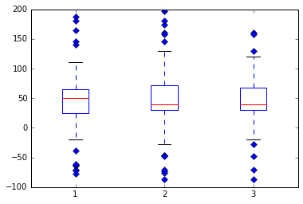
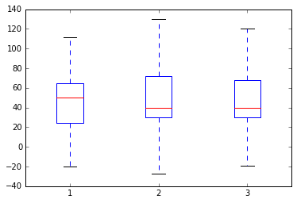
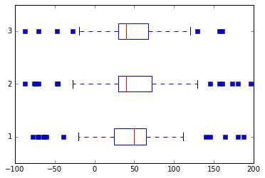
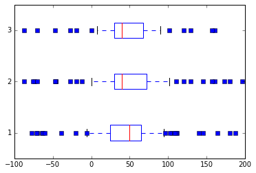

Anderson Data Science Research Lab
 The Anderson Data Science Research Lab applies and develops algorithms in data mining, machine learning, and artificial intelligence to the fields of big data, knowledge discovery, bioinformatics, genomics, and metabolomics. The material presented here is available under the MIT License.
The Anderson Data Science Research Lab applies and develops algorithms in data mining, machine learning, and artificial intelligence to the fields of big data, knowledge discovery, bioinformatics, genomics, and metabolomics. The material presented here is available under the MIT License.
Lists
Take-aways: Great for collecting items. Notice that you can mix types.
mylist = [0, 3, 2, 'hi']
mylist[0] = 2
print mylist[0]2
Making a Copy
import copy
clist = copy.deepcopy(mylist) # Necessary if you have nested objectsSlicing
print mylist[2:4] # Returns elements in index 2 and 3.
print mylist[0:4:2] # mylist[start:end:step]
print mylist[:] # Returns the whole list and a shallow copy[2, 'hi']
[2, 2]
[2, 3, 2, 'hi']
Sorting
mylist.sort()
print mylist[2, 2, 3, 'hi']
Other functions
mylist.append(3)
print mylist[2, 2, 3, 'hi', 3]
print mylist.count('hi')
print mylist.count(3)1
2
otherlist = [-1,-2,-3]
mylist.extend(otherlist)
print mylist[2, 2, 3, 'hi', 3, -1, -2, -3]
mylist.index(2)0
mylist.index(-5)---------------------------------------------------------------------------
ValueError Traceback (most recent call last)
<ipython-input-20-c383587f266d> in <module>()
----> 1 mylist.index(-5)
ValueError: -5 is not in list
mylist.insert(1,'a')print mylist[2, 'a', 2, 3, 'hi', 3, -1, -2, -3]
print mylist.pop(1)a
print mylist.remove('hi')None
print mylist[2, 2, 3, 3, -1, -2, -3]
mylist.reverse()
print mylist[-3, -2, -1, 3, 3, 2, 2]
anotherlist = [-3,-2,-1,0,0,-2,2]
mylist == anotherlistFalse
Tuples
A tuple is an immutable list (read-only, doesn't change). You can reference them in the same way as lists for the most part.
mytuple = (0, 3, 2, 'h')
print mytuple[1]3
mytuple[1] = 4---------------------------------------------------------------------------
TypeError Traceback (most recent call last)
<ipython-input-29-6b61a51d3ea0> in <module>()
----> 1 mytuple[1] = 4
TypeError: 'tuple' object does not support item assignment
Dictionaries
A dictionary is a key-value data structure that allows you to reference each element by a key.
months = {'Jan': 31, 'Feb': 28, 'Mar': 31}
print months['Jan']31
print months.keys()['Jan', 'Mar', 'Feb']
print months.items()[('Jan', 31), ('Mar', 31), ('Feb', 28)]
for key in months:
print keyJan
Mar
Feb
for (key,value) in months.items():
print key,valueJan 31
Mar 31
Feb 28
A quick comparison to R and MATLAB
- Indexing starts at 0.
- All three are scripting languages.
- R and Python are open source and freely available languages.
- All three have a great set of available add-on packages.
Writing and Importing Code
Two ways to import code
- import name
- from name import *
import sys
sys.path.append('mypath') # Appends mypath to the system path.Control Flow
a = 2
if a == 1:
print 1
elif a == 2:
print 2
else:
print 'otherwise'2
for key in months:
print keyJan
Mar
Feb
i = 0
while i < len(mylist):
print mylist[i]
i = i + 1-3
-2
-1
3
3
2
2
Functions
def pythagoras(x,y):
""" Computes the hypotenuse of two arguments"""
h = pow(x**2+y**2,0.5)
return h
print pythagoras(3,4)5.0
Map and Lambda
- If you want to apply the same function to a list of items, use Map
- If you want to create an anonymous and temporary function, use Lambda
alist = [2,3,4]
map(lambda x:pow(x,3) + 7,alist)[15, 34, 71]
filter(lambda x:x > 2,alist)[3, 4]
Exceptions
x = 1
y = 'a'
try:
x/y
except ZeroDivisionError:
print "Divisor must not be 0"
except TypeError:
print "They must be numbers"
except:
print "Something unspecified went wrong"
else:
print "Everything worked!"They must be numbers
x = 1
y = 0
try:
x/y
except ZeroDivisionError:
print "Divisor must not be 0"
except TypeError:
print "They must be numbers"
except:
print "Something unspecified went wrong"
else:
print "Everything worked!"Divisor must not be 0
Classes
class CofC:
def __init__(self,bestDept):
self.bestDept = bestDept
def whatIsTheBestDepartment(self):
return self.bestDeptuniv = CofC('Computer Science')
print univ.whatIsTheBestDepartment()Computer Science
Using NumPy and Matplotlib
- Python isn't really good at numerical processing by default.
- That is why we use other packages.
import numpy as npNumPy Arrays
myarray = np.array([4,3,2])
mybigarray = np.array([[3,2,4],[3,3,2],[4,5,2]])print myarray[4 3 2]
print mybigarray[[3 2 4]
[3 3 2]
[4 5 2]]
mybigarray is an example of how we will create matrices
Creation Functions
np.arange(5)array([0, 1, 2, 3, 4])
np.arange(3,7,2) # start, stop, steparray([3, 5])
np.ones((3,4))array([[ 1., 1., 1., 1.],
[ 1., 1., 1., 1.],
[ 1., 1., 1., 1.]])
np.zeros((3,4))array([[ 0., 0., 0., 0.],
[ 0., 0., 0., 0.],
[ 0., 0., 0., 0.]])
np.eye(3)array([[ 1., 0., 0.],
[ 0., 1., 0.],
[ 0., 0., 1.]])
np.linspace(3,7,3)array([ 3., 5., 7.])
np.linspace(3,7,5)array([ 3., 4., 5., 6., 7.])
np.linspace(3,7,6)array([ 3. , 3.8, 4.6, 5.4, 6.2, 7. ])
np.r_[1:4,0,4] # Row concatenationarray([1, 2, 3, 0, 4])
np.c_[np.arange(3),np.arange(3)] # Column concatenationarray([[0, 0],
[1, 1],
[2, 2]])
np.size(np.eye(3))9
np.shape(np.eye(3))(3, 3)
print np.arange(6)
print np.arange(6).reshape(3,2)[0 1 2 3 4 5]
[[0 1]
[2 3]
[4 5]]
np.ravel(np.eye(3))array([ 1., 0., 0., 0., 1., 0., 0., 0., 1.])
np.arange(6)[::-1] # Reverse the orderarray([5, 4, 3, 2, 1, 0])
np.min(np.arange(6))0
np.max(np.arange(6))5
np.copy(np.arange(6))array([0, 1, 2, 3, 4, 5])
Operations on arrays
a=np.arange(6).reshape(2,3)
b=np.ones((2,3))
print a
print b[[0 1 2]
[3 4 5]]
[[ 1. 1. 1.]
[ 1. 1. 1.]]
a+barray([[ 1., 2., 3.],
[ 4., 5., 6.]])
a*(b+1) # Element wise operations!array([[ 0., 2., 4.],
[ 6., 8., 10.]])
np.dot(a,b) # Matrix multiplication, but the dimensions don't agree!---------------------------------------------------------------------------
ValueError Traceback (most recent call last)
<ipython-input-71-c8af594e789d> in <module>()
----> 1 np.dot(a,b) # Matrix multiplication, but the dimensions don't agree!
ValueError: shapes (2,3) and (2,3) not aligned: 3 (dim 1) != 2 (dim 0)
np.dot(np.transpose(a),b)np.dot(a,np.transpose(b))pow(a,2)Random Numbers
np.random.rand(3,2) # uniformly distributed random numbers between 0 and 1np.random.randn(3,2) # normally distributednp.random.normal(1,2,(3,2)) # with mean of 1 and standard deviation of 2np.random.uniform(-1,3,(3,2)) # random uniform numbers between -1 and 3np.random.randint(1,10,(3,2)) # random integers between 1 and 10Plotting with MATPLOTLIB and PyLab
import matplotlib.pyplot as plt
import numpy as np
# fake up some data
spread = np.random.rand(50) * 100
center = np.ones(25) * 50
flier_high = np.random.rand(10) * 100 + 100
flier_low = np.random.rand(10) * -100
data = np.concatenate((spread, center, flier_high, flier_low), 0)# basic plot
plt.boxplot(data);
# notched plot
plt.figure()
plt.boxplot(data, 1);# change outlier point symbols
plt.figure()
plt.boxplot(data, 0, 'gD');
# don't show outlier points
plt.figure()
plt.boxplot(data, 0, '');
# horizontal boxes
plt.figure()
plt.boxplot(data, 0, 'rs', 0);
# change whisker length
plt.figure()
plt.boxplot(data, 0, 'rs', 0, 0.75);
# fake up some more data
spread = np.random.rand(50) * 100
center = np.ones(25) * 40
flier_high = np.random.rand(10) * 100 + 100
flier_low = np.random.rand(10) * -100
d2 = np.concatenate((spread, center, flier_high, flier_low), 0)
data.shape = (-1, 1)
d2.shape = (-1, 1)
# data = concatenate( (data, d2), 1 )
# Making a 2-D array only works if all the columns are the
# same length. If they are not, then use a list instead.
# This is actually more efficient because boxplot converts
# a 2-D array into a list of vectors internally anyway.
data = [data, d2, d2[::2, 0]]
# multiple box plots on one figure
plt.figure()
plt.boxplot(data);---------------------------------------------------------------------------
AttributeError Traceback (most recent call last)
<ipython-input-73-9744903c53b9> in <module>()
17 flier_low = np.random.rand(10) * -100
18 d2 = np.concatenate((spread, center, flier_high, flier_low), 0)
---> 19 data.shape = (-1, 1)
20 d2.shape = (-1, 1)
21 # data = concatenate( (data, d2), 1 )
AttributeError: 'list' object has no attribute 'shape'



Some notes on plots and this notebook
- The line at the top of this notebook is necessary to turn on inline plotting.
- The ; that are added on the end of the plots hide object output that is also echoed.
- For more examples, http://matplotlib.org/1.5.1/examples/index.html